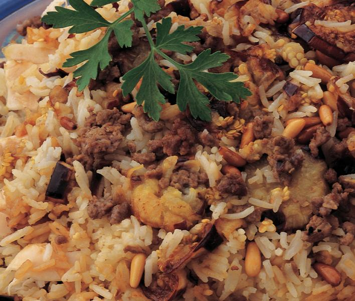
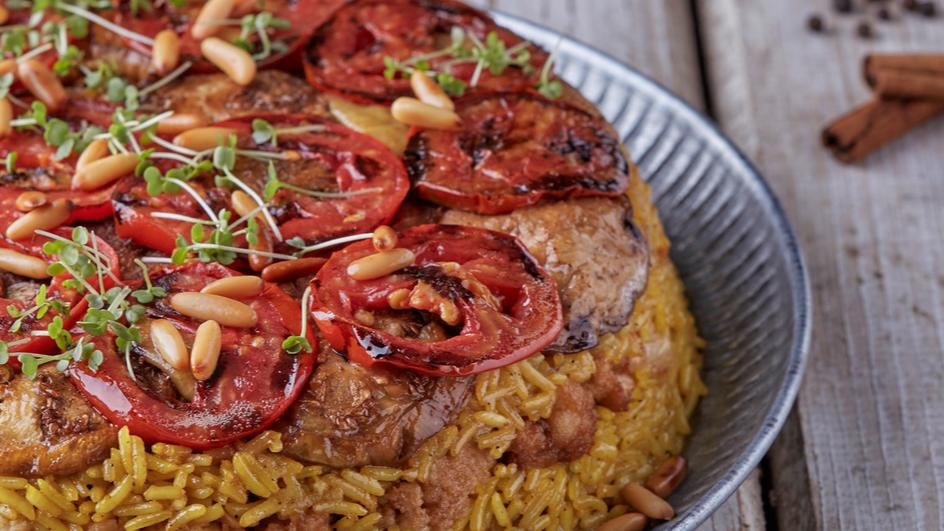

Maklouba

What is Maklouba?
Maklouba is a popular Palastinian dich that Saudis really like the concept of.
Ingredients
- 1 kilogram of Whole chicken
- 2 Medium Eggplants, peeled and diced
- 5 tbsp of Vegetable oil
- 350g of Minced lamb
- 3 cups of Basmati rice
- 2 cubes of MAGGI® Vegetable Bouillon
- 0.5 cup of Nuts, pine nuts, dried
Steps
Step 1
- Boil chicken in water for 50 mins or until it becomes tender. Remove skin and bones and flake into thick flakes.
Step 2
- Deep fry eggplant slices until they become golden in color. Set aside.
Step 3
- Heat remaining 5 tablespoons of oil in a pot and fry minced meat for 5 mins or until it becomes brown in color and well cooked.
Step 4
- Arrange fried eggplant slices on top of cooked meat in the same pot then add a layer of shredded chicken and flakes, finally add the rice on top.
Step 5
- Pour 5½ cups of chicken stock, add to it MAGGI® Vegetable Bouillon cubes and salt. Stir on low heat till MAGGI® Vegetable Bouillon cubes dissolve.
Step 6
- Add the prepared stock to the rice and bring to boil. Cover and let it simmer on low heat for 25-30 mins or until rice is cooked.
Step 7
- Turn pot upside down on a serving platter and garnish with fried pine nuts.
